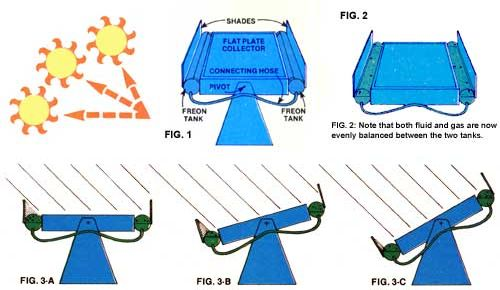

FIG. 4: The collector has been facing west (left). As the sun appears on the eastern horizon (to the right), however, the freon in Its unshaded tank has begun to warm and expand. This is pushing the piston down in the hydraulic cylinder and, as the contracting piston pulls on the eccentric arm fastened to the pivoted flat-plate collector, the solar collector is pulled over to face the fresh morning sun.